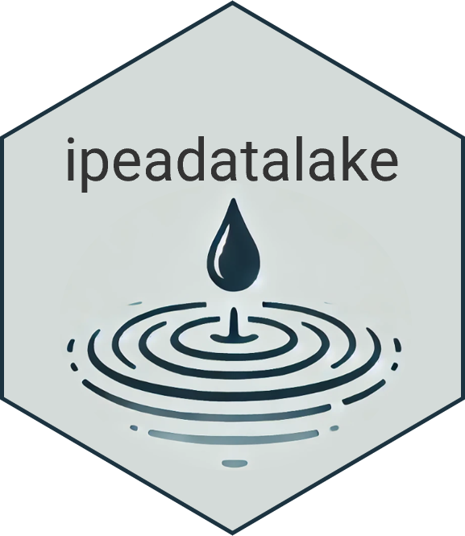
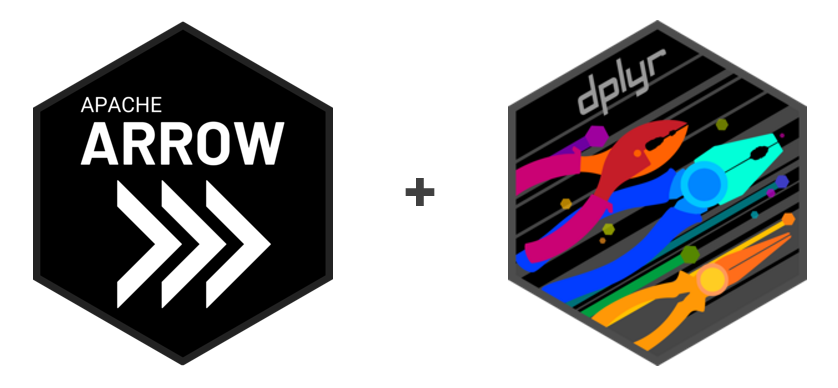

pkgs_to_install <- c('remotes', 'getPass', 'git2r')
install.packages(pkgs_to_install)Acessando dados com o {ipeadatalake}
Módulo ministrado pela COCD
Introdução
Em termos gerais, um “data lake” é um conjunto de bases de dados armazenadas num repositório que permite rápido e fácil acesso e integração entre bases diferentes. O Ipea vem gradativamente progredindo na construção e integração do seu data lake, que inclui uma ampla gama de bases de dados públicos, e registros administrativos restritos do governo federal e instituições parceiras.
Todos esses dados podem ser acessados diretamente no storage6, como visto na aula anterior. A maneira mais fácil de acessar esses dados é pelo pacote de R {ipeadatalake}. Nesta aula você vai aprender alguns exemplos de como usar o pacote {ipeadatalake} no R.

Instalando o {ipeadatalake}
Só é possível instalar e usar o pacote {ipeadatalake} em computadores dentro da rede do Ipea. Para instalar o pacote, você vai precisar dos pacotes {remotes}, {getPass} e {git2r}.
Pronto, agora basta rodar o codigo abaixo para instalar o {ipeadatalake}. Note que você deve informar passar sua matrícula para o objeto your_id, e que o R abrir uma jenala pop-up para você inserir sua senha.
# seu login (matricula)
your_id <- "r1701707"
remotes::install_git(
url = "https://gitlab.ipea.gov.br/data/ipeadatalake",
credentials = git2r::cred_user_pass(
username = your_id,
password = getPass::getPass()
)
)Visão geral do {ipeadatalake}
Até o momento desse curso, o pacote incluía as seguintes funções / bases de dados:
read_bmap()# trabalhoread_cadunico()read_censo_escolar()read_censo_demografico()read_cnefe()read_pnadc()read_rais()
Estas são as algumas das principais bases de dados do data lake to Ipea, mas em breve o pacote deverá incluir novas funções para ler outras bases, como as listadas abaixo. A inclusão de novas bases no {ipeadatalake} também depende em grande medida dos pesquisadores especiliastas de cada base e que contribuem para sua organização e importação.
- [em breve]
read_condicionalidades() - [em breve]
read_pof() - [em breve]
read_cpf() - [em breve]
read_cnpj() - [em breve]
read_pnad()
A sintaxe de todas as funções do {ipeadatalake} seguem uma mesma lógica, o que torna intuitivo e fácil o forma de se ler uma base de dados com apenas uma linha de código. A estrutura básica das funções tem os seguintes argumentos:
read_rais(
year,
columns,
as_data_frame,
geocode,
silent
)- 1
- Ano de referenência
- 2
- seleciona colunas que devem ser lidas
- 3
-
Retorna resultado como um
Arrow DataSetoudata.frame - 4
- Adiciona columnas com dados espaciais (disponível apenas para algumas bases)
- 5
- Silencia mensagens da função
Além dessas funções de leitura de dados, o {ipeadatalake} tem a função data_documentation(), que abre a pasta com a documentação de uma base de dados selecionada.
# censo escolar
ipeadatalake::data_documentation(dataset = 'censo_escolar')
# RAIS
ipeadatalake::data_documentation(dataset = 'rais')Trabalhando com dados maior do que a RAM
Assim como o pacote {censobr}, que vimos na aula anterior, o pacote {ipeadatalake} também facilita que usuários trabalhem com grandes bases de dados de maneira eficiente utilizando pouca memória RAM a partir de integração com pacotes como {dplyr}, {arrow} e {duckdb}.

Importante
Por padrão, as funções do {ipeadatalake} sempre retoram um
Vamos então partir para exemplos na prática, e começar carregando as bibliotecas que usamos.
# carrega bibliotecas
library(ipeadatalake)
library(arrow)
library(dplyr)
library(ggplot2)
library(geobr)Exemplo 1: Censo Demográfico
O pacote possui a função read_censo_demografico() para ler os dados dos censos demográficos brasileiros (IBGE). Esta função é um wrapper do pacote {censobr} para ler os dados localmente do data lake to Ipea. Assim, você tem as vantagens do {censobr} sem ter que baixar os dados, e o acesso é praticamente instantâneo. Uma diferença importante é que aqui, ao invés de termos uma função separada para cada base de dados do censo demográfico, nós temos uma única função, e o tipo de base de dados deve ser informado no argumento type:
# dados de populacao
df_pop <- ipeadatalake::read_censo_demografico(
year = 2010,
type = 'population'
)
# dados de domicilios
df_dom <- ipeadatalake::read_censo_demografico(
year = 2010,
type = 'domicilios'
)Exemplo 2: Censo Escolar
Outra base de dados pública disponível no pacote é o Censo Escolar (Inep). A base traz os dados tanto de escolas de ensino básico quanto profissional. Para edições do censo anteriores a 2007, no entanto, o usuário precisa explicitar qual tipo de escola deve ser lido, pois a função carrega separadamente os dados das escolas de educação básica ("type = basica"), e as escolas de ensino profissional ("type = profissional").
# todas escolas em 2020
df_esc_2023 <- ipeadatalake::read_censo_escolar(
year = 2023
)
# escolas de ensino basico em 2000
df_esc_2000 <- ipeadatalake::read_censo_escolar(
year = 2000,
type = 'basica',
)Nesse exercício abaixo, nós vamos calcular a proporção das escolas públicas municipais que estava conectadas à rede de água em 2023, e como esse índice varia entre as grandes regiões do Brasil.
df_esc_agua <- df_esc_2023 |>
filter(TP_DEPENDENCIA == 3) |>
group_by(NO_REGIAO) |>
summarise(total_escolas = n(),
rede_agua_abs = sum(IN_AGUA_REDE_PUBLICA, na.rm=T),
rede_agua_pct = rede_agua_abs / total_escolas) |>
collect()
head(df_esc_agua)- 1
- Mantém somente escolas públicas municipais
- 2
- Agrupa por região
- 3
- Conta total de escolas
- 4
- Conta total de escolas com rede de água (valor 1 com rede, e 0 sem rede)
- 5
- Calcula proporção de escolas com rede de água
- 6
- Carrega resultado na memória
Com essa tabela em mãos, a gente pode fazer um ggplot com o que aprendemos na aula passada.
ggplot(data = df_esc_agua) +
geom_col(aes(x=reorder(NO_REGIAO, rede_agua_pct), y = rede_agua_pct)) +
scale_y_continuous(labels = scales::percent) +
labs(title = "Escolas públicas municipais conectadas a rede de água. Brasil, 2023.", x="Região", y="Proporção") +
theme_classic()Exemplo 2: PNADc
Exemplo 3: Cadastro Único
O Cadastro Único é a principal fonte de dados sobre a população em situação de vulnerabilidade socioeconômica no Brasil, e é utilizado para planejamento, implementação, monitoramento, operação e avaliação de diversas políticas de todas as esferas federativas no país.
O Ipea recebe dados das atualizações mensais do Cadúnico. Por isso, ao invés do usuário informar o ano dos dados, é necessário informar a data date de referência no formato YYYYMM. Além disso, o usuário deve especificar se a função deve ler os dados de famílias (type = 'familias') ou de pessoas (type = 'pessoas')
Nesse examplo aqui, calcule a proporção de famílias com acesso a rede de água.
# ler somente colunas de UF e tipo de abastecimento de agua
df_cadunico <- ipeadatalake::read_cadunico(
date = 202407,
type = 'familia',
columns = c('co_uf', 'co_abaste_agua_domic_fam')
)- 1
- Lendo somente as colunas necessárias
# recodifica coluna de abastecimento de agua
df_cadunico_agua <- df_cadunico |>
mutate(agual_canalizada = ifelse(co_abaste_agua_domic_fam==1, 1, 0)) |>
group_by(co_uf) |>
summarise(total_familias = n(),
rede_agua_abs = sum(agual_canalizada, na.rm=T),
rede_agua_pct = rede_agua_abs / total_familias) |>
collect()- 1
- Recodifica variável de rede de água como dummy (1 com acesso, 0 sem acesso)
- 2
- Agrupa por UF
- 3
- Conta total de famílias
- 4
- Conta total de famílias com rede de água
- 5
- Calcula proporção de famílias com rede de água
- 6
- Carrega resultado na memória
Essa tabela acima é agrupada por UF, mas nós precisamos agrupar por região para fazer o gráfico.
# tira média de cada região
df_cadunico_agua_tb <- df_cadunico_agua |>
mutate(regiao = substring(co_uf, 1, 1)) |>
group_by(regiao) |>
summarise(cobertura_agua = weighted.mean(x=rede_agua_pct, total_familias))
# figura
ggplot(data = df_cadunico_agua_tb) +
geom_col(aes(x=reorder(regiao, cobertura_agua), y = cobertura_agua)) +
scale_y_continuous(labels = scales::percent) +
labs(title = "Escolas públicas municipais conectadas a rede de água. Brasil, 2023.", x="Região", y="Proporção") +
theme_classic()Exemplo 4: Dados com coordenadas geográficas
Algumas bases de dados presente no data lake do Ipea possuem informação dos endereços das unidades de análise (e.g. empresas, pessoas, estabelecimentos de ensino etc). A política que o Ipea começou a adotar a partir de 2023 é fazer a geolocalização massiva de todas as suas bases de dados para todos os dados, e disponibilizar as informações espaciais para todos os usuários.
Nota
Atualmente, essas informações espaciais estão disponíveis apenas para algumas bases, como censo escolar, CadÚnico, e Rais.
Em todos os casos, pasta passar o parametro geocode = TRUE para acessar esses dados.
# ler dados com colunas espaciais
df_esc_2023 <- ipeadatalake::read_censo_escolar(
year = 2023,
geocode = TRUE
)Para por um instante e veja o nome das colunas espaciais. Veja detalhes na documentação da função: ??read_censo_escolar
Aviso
Dentre as colunas de dados espaciais, a coluna Addr_type é que traz informação sobre as categorias de precisão das coordenadas geográficas. A definicao exata de cada categoria se encontra na documentacao do ArcGIS. Você deve ser muita cautela na hora de usar estes dados, e entender qual o grau de precisão mínimo que a sua análise exige.
Agora que entendemos um pouco melhor esses dados, vamos fazer uma rápida inspeção visual para examinar a distribuição espacial das escolas com acesso a rede de água no estado de Sergipe. Neste exemplo, nós só precisamos saber o município de cada escola, então vamos aceitar os resultados do geocode para todas as observações da base.
# filtrar somente estado de Sergipe
df_esc_sergipe <- df_esc_2023 |>
filter(NO_UF == "Sergipe") |>
collect()
# ler geometria do estado de Sergipe
sf_sergipe <- geobr::read_state(code_state = "SE")
# mapa
ggplot() +
geom_sf(data = sf_sergipe) +
geom_point(data = df_esc_sergipe,
aes(x=lon, y = lat, color=as.factor(IN_AGUA_REDE_PUBLICA)),
alpha=.1, show.legend = FALSE) +
facet_grid(~IN_AGUA_REDE_PUBLICA) +
theme_void()